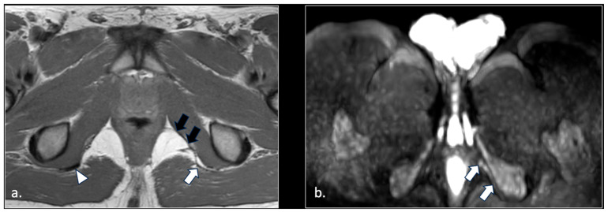
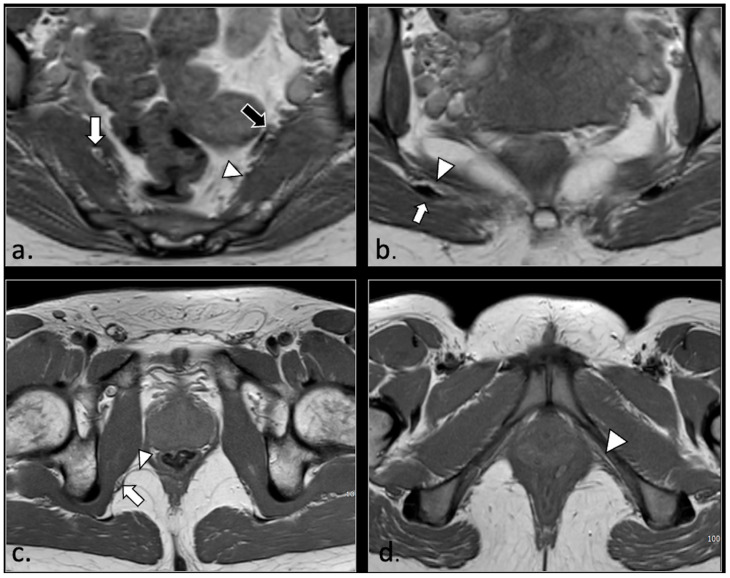

3843 — Đau thần kinh thẹn & chèn ép trong ống Alcock / Pudendal neuralgia and Alcock canal entrapment
Tags: pattern:day-than-kinh pattern:chen-ep-than-kinh pattern:dau-day-chau vung:than-kinh-ngoai-bien vung:khung-chau anatomy:than-kinh-then protocol:MRI-chau protocol:sieu-am-than-kinh score:Nantes
Mức chắc chắn (certainty): tổng hợp y văn (literature synthesis) — số liệu từ một đoàn hệ MRI 81 ca có protocol DWI chuyên biệt (Diagnostics 2026, PMCID PMC12840153, CC BY 4.0), một tổng quan hệ thống 35 bài về chẩn đoán – điều trị (Pain Ther 2026, PMCID PMC12804544), một nghiên cứu can thiệp sớm 81 ca (PMC11944006), cùng các nghiên cứu chẩn đoán hình ảnh được tổng quan đó trích dẫn (siêu âm Doppler 83 ca/166 dây, MRN 139 dây, MRI 580 ca). Không có ca do nhóm tự chụp.
Câu chốt: đau đáy chậu – sinh dục tăng khi ngồi, không đánh thức ban đêm, không mất cảm giác khách quan là đau thần kinh thẹn (pudendal neuralgia), chẩn đoán lâm sàng theo tiêu chuẩn Nantes. Ba con số quyết định: (1) hình ảnh không phải cửa ải chẩn đoán — trong 81 ca đủ tiêu chuẩn lâm sàng, chỉ 42/81 (51,9%) có bất thường dây thần kinh trên DWI, 39/81 (48,1%) MRI hoàn toàn bình thường (PMC12840153); (2) khi có bất thường, 23/42 (54,8%) kèm nguyên nhân ngoài dây thần kinh (dây chằng, cơ, xơ hóa ống Alcock, u, giãn tĩnh mạch) — chính là phần mổ được; (3) thời gian từ khởi phát tới điều trị là yếu tố dự báo mạnh nhất: can thiệp < 13 tháng giảm VAS 5,4 so với 3,4 điểm và giảm tỷ lệ tiêm lại 10% so với 35% (PMC11944006).
1. Tổng quan bệnh học – cơ chế hình ảnh (TẠI SAO)
1.1 Đường đi bốn đoạn — bốn ổ chèn ép
- Thần kinh thẹn là dây hỗn hợp cảm giác – vận động – tự chủ, tạo từ rễ trước S2–S4. Trong chậu, dây chạy mặt trước cơ lê (piriformis), ra khỏi chậu qua lỗ ngồi lớn, bắt chéo dây chằng cùng–gai (sacrospinous ligament), vòng qua gai ngồi (ischial spine), vào lại chậu qua lỗ ngồi nhỏ, rồi đi trong ống Alcock (pudendal canal) — ống do mạc bịt trong tạo thành, chứa dây thần kinh + động–tĩnh mạch thẹn trong.
- Cuối ống, dây chia ba nhánh: thần kinh trực tràng dưới, thần kinh đáy chậu, thần kinh lưng dương vật/âm vật.
- Vì vậy có 4 ổ chèn ép (phân loại theo giải phẫu, dùng trong tổng quan PMC12804544): (1) dưới cơ lê; (2) trong khoảng liên dây chằng cùng–gai/cùng–ủng; (3) trong ống Alcock; (4) nhánh tận (dương vật/âm vật).
- TẠI SAO đau tăng khi ngồi: cả ba ổ chính đều chịu lực nén trực tiếp của trọng lượng cơ thể khi ngồi (củ ngồi – dây chằng cùng–ủng – thành bên ống Alcock). Đây là lý do tiêu chuẩn Nantes đặt "đau khi ngồi" làm tiêu chí thiết yếu, và cũng là lý do khối chèn ép ở ống Alcock (xơ hóa, giãn tĩnh mạch) lại gây đau một bên, tiến triển trong ngày.
1.2 TẠI SAO DWI thấy dây thần kinh còn STIR/T2 fat-sat hay bị nhiễu
- Dây thần kinh bình thường giàu mỡ myelin và ít nước tự do, sợi trục xếp song song nên khuếch tán nước dị hướng (anisotropic). Trên DWI b600, dây thần kinh bình thường gần như không thấy (tín hiệu thấp), trừ rễ thắt lưng–cùng và dây thần kinh tọa vốn tăng tín hiệu sinh lý khi ra khỏi lỗ liên hợp.
- Khi bị chèn ép → ứ trệ vận chuyển sợi trục, phù nội sợi (endoneurial edema) → nước ngoại bào tăng → tăng tín hiệu trên DWI b600 và dày dây thần kinh. Đây là cơ sở của tiêu chuẩn hình ảnh do nhóm Messina đề xuất: dây thần kinh thẹn được coi là bất thường khi tăng tín hiệu ngang với dây thần kinh tọa cùng bên trên 2 lát b600 liên tiếp hoặc 3 lát không liên tiếp (PMC12840153).
- TẠI SAO không dùng T2 fat-sat/STIR làm chuẩn: máu chảy trong động–tĩnh mạch thẹn trong (đi cùng dây trong ống Alcock) cũng tăng tín hiệu, tạo "dây thần kinh giả"; DWI là chuỗi "máu đen" (black-blood) nên tách được dây thần kinh khỏi mạch. Nhóm tác giả ghi rõ đây là lý do họ chọn DWI thay vì MRN T2 cổ điển.
- Giới hạn vật lý: độ phân giải 3 mm cho T1/T2 và 4 mm cho DWI đủ thấy đoạn gần (tới ống Alcock), nhưng nhánh tận rất khó thấy, kể cả khi đã đánh dấu bằng chỉ mổ.
1.3 Ngưỡng định lượng nằm lòng
| Đại lượng | Số liệu | Nguồn |
|---|---|---|
| Tần suất trong dân số | 1/100.000 (Quỹ Pudendal Neuropathy); ước tính tới 1%; nữ gấp > 2 lần nam | PMC12840153 |
| Bất thường dây thần kinh trên DWI (đoàn hệ 81 ca) | 42/81 = 51,9%; một bên 33/42, hai bên 9/42 | PMC12840153 |
| MRI hoàn toàn bình thường dù đủ tiêu chuẩn lâm sàng | 39/81 = 48,1% | PMC12840153 |
| Có nguyên nhân ngoài dây thần kinh | 23/42 = 54,8% (dây chằng 5, cơ lê 4, rách cơ mu–cụt 4, xơ hóa ống Alcock 4, u/Tarlov/giãn tĩnh mạch phần còn lại) | PMC12840153 |
| Siêu âm Doppler màu (83 ca) | nhạy 90%, đặc hiệu 67% cho chèn ép mạch–thần kinh | PMC12804544 |
| MR neurography 3T (139 dây) | nhạy 65% (90/139) | PMC12804544 |
| MRI (580 ca đau chậu mạn) | 78% (454/580) có bất thường gợi ý | PMC12804544 |
| Block thần kinh thẹn (76 ca, đường trực tràng) | 62% đáp ứng dương (đủ tiêu chí Nantes thứ 5) | PMC12804544 |
| Block thần kinh thẹn — hiệu quả giảm đau | 68–94% trong các nghiên cứu | PMC12804544 |
| Ngưỡng thời gian can thiệp sớm (ROC) | 13 tháng (nhạy 78%, đặc hiệu 72%) | PMC11944006 |
| Can thiệp sớm so với muộn | VAS giảm 5,4 so với 3,4 điểm; chất lượng sống +18 so với +8 điểm; tiêm lại 10% so với 35% | PMC11944006 |
| Tỷ lệ phải mổ sau thất bại bảo tồn/block | 8–15% | PMC12804544 |
| Mổ giải ép (thử nghiệm ngẫu nhiên 32 ca) | nhóm mổ tốt hơn nhóm thuốc tại 12 tháng, p = 0,0025; 9/16 ca nhóm chứng xin mổ | PMC12804544 |
- Chưa rõ — cần tra: chưa có ngưỡng diện tích cắt ngang (CSA) tuyệt đối của dây thần kinh thẹn được thẩm định đa trung tâm; tài liệu hiện tại dùng so sánh bên đối diện và tăng tín hiệu DWI, không dùng một con số mm² cố định.
2. Mẫu hình + chẩn đoán phân biệt theo vị trí (Gamut)
- Đau đáy chậu một bên, tăng khi ngồi, giảm khi đứng/nằm → nghĩ ngay thần kinh thẹn; đau không đánh thức ban đêm và không mất cảm giác khách quan giúp loại đau do tổn thương thực thể nặng.
- Theo ổ chèn ép (gamut định vị):
- Trong chậu (gần): rễ S2–S4 bị chèn (thoát vị, u, nang Tarlov), đám rối cùng, cơ lê phì đại.
- Khoảng liên dây chằng: dày/xơ dây chằng cùng–gai hoặc cùng–ủng, can xương sau chấn thương khung chậu.
- Ống Alcock: xơ hóa đáy chậu (sau sinh, sau mổ, sau xạ), giãn tĩnh mạch thẹn, u bao dây thần kinh (schwannoma).
- Nhánh tận: đau dương vật/âm vật đơn thuần, sau chấn thương hoặc phẫu thuật vùng chậu.
- Gamut theo bệnh cảnh (không phải thần kinh thẹn): đau xương cụt (bài 304), hội chứng cơ nâng hậu môn, đau rễ S3, bệnh khớp háng – chèn ép ụ ngồi–cơ đùi (ischiofemoral impingement), viêm tuyến tiền liệt/viêm âm đạo, đau sau mổ sa sinh dục.
- Gợi nhớ NANTES cho 5 tiêu chí thiết yếu: Neurological distribution (S2–S4), Aggravated by sitting, No night awakening, Touch/sensation intact, Efficacy of nerve block.
3. Bảng so sánh phân biệt (ma trận đối chiếu)
| Thực thể (entity) | Hình ảnh điển hình | Chốt vào (rule-in) | Chốt loại (rule-out) | Gợi ý xác nhận |
|---|---|---|---|---|
| Đau thần kinh thẹn do chèn ép | DWI b600: dây thần kinh tăng tín hiệu, dày ở gai ngồi/ống Alcock; T1/T2 thấy dày–xơ dây chằng cùng–gai/cùng–ủng, xơ hóa thành ống Alcock | Đau tăng khi ngồi + không thức ban đêm + block dương; tăng tín hiệu trên ≥ 2 lát b600 liên tiếp | MRI bình thường không loại trừ (48,1% ca) — chẩn đoán vẫn dựa lâm sàng | MRI chậu có DWI + block thần kinh thẹn |
| Hội chứng cơ lê (piriformis) | Cơ lê phì đại/mất đối xứng, đám rối thắt lưng–cùng bị đẩy; có thể kèm đau mông – đùi sau (bài 3841) | Đau mông sâu + đau lan mặt sau đùi, đau khi duỗi/khép háng kháng lực | Đau khu trú đáy chậu, không đau mông → loại | MRI chậu + nghiệm pháp FAIR |
| Nang Tarlov (nang quanh rễ cùng) | Nang dịch ở ống sống cùng S2–S4, có thể tăng tín hiệu T1 do máu cũ | Nang lớn đúng rễ S2–S4 + đau điển hình; giảm đau sau giải ép nang (ca PMC12840153) | Nang nhỏ, không tương ứng rễ → có thể là phát hiện tình cờ, không quy nhân | MRI cùng–cụt T1/T2 + myelography |
| U bao dây thần kinh thẹn (schwannoma) | Khối dạng nang/đặc dọc đường đi, ngấm thuốc, có thể nhiều u (ca 2 schwannoma) | Thấy khối liên tục với dây thần kinh + ngấm thuốc | Không thấy khối, chỉ dày lan tỏa → loại | MRI sau tiêm + mô bệnh |
| Giãn tĩnh mạch thẹn trong ống Alcock | STIR MIP: giãn tĩnh mạch toàn vùng chậu dưới, bó mạch lớn cạnh dây thần kinh | Giãn tĩnh mạch cùng bên đau + tăng tín hiệu dây trên DWI | Không giãn tĩnh mạch, dây bình thường → loại | MRI chậu có STIR MIP; siêu âm Doppler |
| Rách/xơ cơ mu–cụt (pubococcygeus) & xơ cạnh âm đạo | Mất liên tục cơ mu–cụt, cơ còn lại mỏng, âm đạo lệch bên; xơ cạnh âm đạo trên T2 | Mất cơ + lệch trục âm đạo + đau một bên | Cơ nguyên vẹn, đối xứng → loại | MRI sàn chậu động (khi có) |
| Đau xương cụt / sau cắt xương cụt | Xương cụt bình thường hoặc di chứng mổ; không bất thường dây thần kinh | Đau khu trú xương cụt, tăng khi ngồi nghiêng; block thẹn âm | Đau lan tới dương vật/âm vật + block dương → loại | X-quang/CT cùng–cụt; so với bài 304 |
4. Protocol chụp + hệ phân độ/điểm
4.1 Protocol MRI chậu–sàn chậu (1,5T hoặc 3T)
- T2 FSE axial/coronal/sagittal không bão hòa mỡ: TR 4.000 ms, TE hiệu dụng 100 ms, lát 3 mm, SENSE 1,5.
- T2 FSE axial có bão hòa mỡ (SPIR): TR 4.500 ms, TE 100 ms, lát 3 mm — tìm xơ hóa, phù, nhưng nhớ nhiễu do mạch máu.
- T1 FSE axial: TR 450–550 ms, TE 10–15 ms, lát 3 mm — giải phẫu, mỡ, máu cũ.
- Myelography SSTSE coronal/sagittal — phát hiện nang Tarlov.
- DWI EPI toàn đường đi dây thần kinh (từ xương cùng tới đáy chậu): b = 0/100/600, TR 4.100 ms, TE 85 ms, ma trận 125 × 100, EPI factor 41, SENSE 2,5, lát 4 mm. Đọc trên ảnh MIP b600 và ảnh axial nguồn.
- Sau tiêm gadolinium + trừ ảnh khi nghi u, viêm, xơ hóa sau mổ (ca PMC12840153 Hình 4: xơ hóa + ngấm thuốc dọc dây sau mổ giải ép hai bên).
4.2 Siêu âm (bổ trợ, định hướng block)
- Đầu dò linear tần số cao hoặc đầu dò endocavitary cho đoạn trong ống Alcock; khảo sát ngang và dọc toàn đường đi, so bên đối diện cùng tư thế.
- Ghi CSA, độ hồi âm, mẫu bó, và tìm cấu trúc chèn ép (dây chằng dày, xơ, mạch máu giãn).
- Siêu âm Doppler màu: nhạy 90%, đặc hiệu 67% (83 ca) — đặc hiệu thấp nên dương tính không đủ chẩn đoán.
4.3 Tiêu chuẩn Nantes (chẩn đoán lâm sàng) và bậc thang điều trị
5 tiêu chí thiết yếu (phải đủ): (1) đau đúng vùng chi phối thần kinh thẹn (từ hậu môn tới dương vật/âm vật); (2) đau chủ yếu khi ngồi; (3) không đánh thức ban đêm; (4) không mất cảm giác khách quan; (5) giảm đau sau block thần kinh thẹn.
4 tiêu chí loại trừ: đau chỉ khu trú xương cụt/mông/xương mu/hạ vị; ngứa; đau chỉ từng cơn kịch phát; có bất thường hình ảnh giải thích được đau.
Tiêu chí bổ trợ: dị cảm nóng rát, đau khi đại tiện, cảm giác dị vật trực tràng/âm đạo, đau tăng dần trong ngày, đau một bên, điểm đau chói ở gai ngồi (Valleix), đau khi giao hợp.
flowchart TD
A[Đau đáy chậu–sinh dục] --> B{Đủ 4 tiêu chí đầu của Nantes?}
B -->|Không| Z[Tìm nguyên nhân khác: xương cụt, cơ nâng, rễ S3, khớp háng]
B -->|Có| C[Block thần kinh thẹn]
C -->|Giảm đau rõ| D[Chẩn đoán đau thần kinh thẹn]
C -->|Không giảm| E[Vẫn nghi: MRI chậu + DWI, siêu âm]
D --> F[MRI chậu + DWI: tìm nguyên nhân ngoài dây thần kinh]
F --> G{Thấy khối/xơ/dây chằng/u?}
G -->|Có| H[Điều trị nguyên nhân: giải ép, xử lý u, nút giãn tĩnh mạch]
G -->|Không| I[Bảo tồn + thuốc đau thần kinh + vật lý trị liệu]
I -->|Thất bại| J[Block lặp / pulsed radiofrequency]
J -->|Thất bại| K[Giải ép thần kinh: transgluteal, ENTRAMI, nội soi]
- Bậc thang điều trị (theo PMC12804544): bảo tồn (tránh ngồi lâu, đệm, thuốc đau thần kinh) → block thần kinh (vừa chẩn đoán vừa điều trị; hiệu quả 68–94%) → pulsed radiofrequency/điện kích (giảm đau tới 95% ca khó trị nhưng độ bền chưa rõ) → mổ giải ép cho 8–15% thất bại.
- Thời điểm: can thiệp trong 13 tháng đầu cho kết quả tốt hơn rõ rệt (mỗi tháng chậm thêm làm VAS cuối tăng 0,18 điểm, p < 0,001).
5. Biến thể bình thường và cạm bẫy
- Dây thần kinh tọa tăng tín hiệu sinh lý trên DWI — đừng lấy đó làm chuẩn bệnh lý; dây thần kinh thẹn bình thường thì KHÔNG thấy trên b600. Đây là điểm dễ đọc ngược.
- Nhiễu mạch máu trên T2 fat-sat/STIR (động–tĩnh mạch thẹn trong đi cùng trong ống Alcock) tạo dây thần kinh giả → luôn đối chiếu DWI và ảnh nguồn axial.
- Nang Tarlov tình cờ: phần lớn nang nhỏ không gây đau; một nghiên cứu gần đây đặt lại vai trò của nang Tarlov trong đau thần kinh thẹn (PMC12840153 dẫn lại). Chỉ quy nhân khi nang đúng rễ S2–S4 cùng bên đau và giảm đau sau giải ép.
- MRI âm tính không loại trừ bệnh (48,1%): nguyên nhân có thể là bệnh thần kinh cảm giác mắc phải/di truyền (kể cả Charcot–Marie–Tooth) dưới ngưỡng phân giải của MRI.
- Bẫy "satisfaction of search": thấy giãn tĩnh mạch hoặc dày dây chằng rồi dừng lại, bỏ qua u bao dây thần kinh hoặc rách cơ mu–cụt ở bên đối diện.
- Sau mổ giải ép vẫn đau: hình ảnh xơ hóa + ngấm thuốc dọc dây (Hình 4) là di chứng/bệnh tái phát, không phải "MRI bình thường sau mổ"; đừng hứa hết đau sau mổ lần hai.
- Hai bên: bất thường hai bên (9/42 ca) gợi ý nguyên nhân toàn thân/cơ học (tư thế ngồi, đạp xe, chấn thương lặp lại) hơn là một ổ chèn ép đơn lẻ.
6. Tự lượng giá — Blind Quiz
Ca 1 — Nam 33 tuổi, đau đáy chậu – bìu trái 3 năm, đạp xe nghiệp dư 10 năm. Đau tăng khi ngồi, không thức ban đêm; ấn dọc dây thần kinh thẹn tái hiện đau.

- Gợi ý: block thần kinh thẹn trái chỉ giảm đau 1 tuần.
- Câu hỏi: dấu hiệu trên T1 và DWI? Ba chẩn đoán phân biệt? Vì sao block chỉ giảm ngắn?
Bấm để hiện đáp án (findings + chẩn đoán)
- Dấu hiệu: T1 (a) — dây chằng cùng–ủng trái mỏng (mũi tên trắng), dây chằng phải bình thường (đầu mũi tên); thành trong ống Alcock trái dày (hai mũi tên đen). DWI b600 (b) — dây thần kinh thẹn trái trong ống Alcock tăng tín hiệu.
- Chẩn đoán: đau thần kinh thẹn do vi chấn thương lặp lại khi đạp xe — dây chằng mỏng đi + xơ hóa thành ống, dây thần kinh bị ép trong ống chật. Block chỉ giảm 1 tuần vì nguyên nhân cơ học còn nguyên.
- Phân biệt: u bao dây thần kinh (không thấy khối ngấm thuốc), nang Tarlov (không có nang), đau xương cụt (không đau khu trú xương cụt, block dương).
- Nguồn ảnh: Diagnostics 2026 (PMC12840153), Hình 9, CC BY 4.0.
Ca 2 — Nữ 43 tuổi, đau đáy chậu trái sau chấn thương; MRI chậu có DWI. Bốn panel dưới đây là các mức tín hiệu khác nhau trên b600.

- Câu hỏi: panel nào là bình thường? Tiêu chí nào biến "tăng tín hiệu" thành bệnh lý? Cạm bẫy mạch máu?
Bấm để hiện đáp án
- Panel (a) không thấy bất thường dây thần kinh thẹn; dây thần kinh tọa vẫn tăng tín hiệu sinh lý (mũi tên).
- Panel (b) và (d): tăng tín hiệu dây thần kinh thẹn phải ở mức gai ngồi; (c) tái tạo sagittal cho thấy tín hiệu tăng dọc đoạn ống Alcock.
- Tiêu chí: tăng tín hiệu ngang với dây thần kinh tọa cùng bên trên 2 lát b600 liên tiếp hoặc 3 lát không liên tiếp; đọc kèm ảnh axial nguồn, không chỉ MIP.
- Cạm bẫy: trên T2 fat-sat/STIR mạch máu cũng sáng → dùng DWI "máu đen" để tách; dây thần kinh thẹn bình thường không thấy trên b600.
- Nguồn ảnh: Diagnostics 2026 (PMC12840153), Hình 10, CC BY 4.0.
Ca 3 — Ôn giải phẫu: bốn mức cắt T1 của đường đi dây thần kinh thẹn.

- Câu hỏi: ở mức nào dây thần kinh nằm giữa hai dây chằng? Mức nào dễ bị bỏ sót nhất khi quét?
Bấm để hiện đáp án
- (a) ngang cơ lê: đám rối thắt lưng–cùng và đám rối thẹn mặt trước cơ lê; biến thể rễ S2 xuyên cơ lê là yếu tố thuận lợi chèn ép.
- (b) ngoài chậu: dây thần kinh đi giữa dây chằng cùng–ủng (sau) và cơ cụt/dây chằng cùng–gai (trước) — đây là khoảng liên dây chằng, ổ chèn ép số 2.
- (c) ống Alcock gần: bó mạch–thần kinh sát cơ bịt trong; (d) ống Alcock xa — khó thấy nhất, nơi nhánh tận tách ra.
- Bỏ sót thường do không quét đủ thấp tới ống Alcock xa và không dùng DWI.
- Nguồn ảnh: Diagnostics 2026 (PMC12840153), Hình 1, CC BY 4.0.
Không dùng để chẩn đoán độc lập khi chưa có người hướng dẫn.
Bài liên quan chéo
- 3841 – Chèn ép thần kinh tọa mạn sau chấn thương/mổ
- 3842 – Chèn ép thần kinh mác chung tại cổ xương mác
- 304 – Đau đáy chậu sau cắt xương cụt
Ảnh
3843_dau-than-kinh-then_MRI_PMC12840153-fig1.jpg— T1 bốn mức giải phẫu, PMC12840153, CC BY 4.0.3843_dau-than-kinh-then_MRI_PMC12840153-fig9.jpg— ca đạp xe: dây chằng mỏng + DWI dương, PMC12840153, CC BY 4.0.3843_dau-than-kinh-then_MRI_PMC12840153-fig10.jpg— DWI bình thường so với bất thường, PMC12840153, CC BY 4.0.